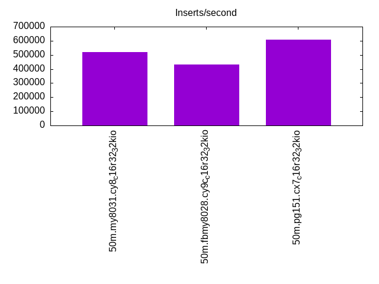

This is a report for the insert benchmark with 50M docs and 8 client(s). It is generated by scripts (bash, awk, sed) and Tufte might not be impressed. An overview of the insert benchmark is here and a short update is here. Below, by DBMS, I mean DBMS+version.config. An example is my8020.c10b40 where my means MySQL, 8020 is version 8.0.20 and c10b40 is the name for the configuration file.
The test server is a c7g.4xl with 16 cores, 32G RAM and io2 storage (1T, 32K IOPs). The benchmark was run with 8 clients and there was 1 or 2 connections per client (1 for queries, 1 for inserts). The benchmark loads 25M rows without secondary indexes, creates secondary indexes, loads another 25M rows then does 3 read+write tests for one hour each that do queries as fast as possible with 100, 500 and then 1000 writes/second/client concurrent with the queries. The database is cached by the storage engine and the only IO is for writes. Clients and the DBMS share one server. The per-database configs are in the per-database subdirectories here.
The tested DBMS are:
The numbers are inserts/s for l.i0 and l.i1, indexed docs (or rows) /s for l.x and queries/s for q*.2. The values are the average rate over the entire test for inserts (IPS) and queries (QPS). The range of values for IPS and QPS is split into 3 parts: bottom 25%, middle 50%, top 25%. Values in the bottom 25% have a red background, values in the top 25% have a green background and values in the middle have no color. A gray background is used for values that can be ignored because the DBMS did not sustain the target insert rate. Red backgrounds are not used when the minimum value is within 80% of the max value.
| dbms | l.i0 | l.x | l.i1 | q100.1 | q500.1 | q1000.1 |
|---|---|---|---|---|---|---|
| 50m.my8031.cy8_c16r32_32kio | 520833 | 809677 | 238095 | 56314 | 55275 | 54388 |
| 50m.fbmy8028.cy9c_c16r32_32kio | 431034 | 612195 | 196850 | 44071 | 43179 | 41730 |
| 50m.pg151.cx7_c16r32_32kio | 609756 | 1568750 | 328947 | 146993 | 145331 | 141142 |
This lists the average rate of inserts/s for the tests that do inserts concurrent with queries. For such tests the query rate is listed in the table above. The read+write tests are setup so that the insert rate should match the target rate every second. Cells that are not at least 95% of the target have a red background to indicate a failure to satisfy the target.
| dbms | q100.1 | q500.1 | q1000.1 |
|---|---|---|---|
| my8031.cy8_c16r32_32kio | 797 | 3988 | 7976 |
| fbmy8028.cy9c_c16r32_32kio | 798 | 3988 | 7976 |
| pg151.cx7_c16r32_32kio | 798 | 3987 | 7976 |
| target | 800 | 4000 | 8000 |
l.i0: load without secondary indexes. Graphs for performance per 1-second interval are here.
Average throughput:
Insert response time histogram: each cell has the percentage of responses that take <= the time in the header and max is the max response time in seconds. For the max column values in the top 25% of the range have a red background and in the bottom 25% of the range have a green background. The red background is not used when the min value is within 80% of the max value.
| dbms | 256us | 1ms | 4ms | 16ms | 64ms | 256ms | 1s | 4s | 16s | gt | max |
|---|---|---|---|---|---|---|---|---|---|---|---|
| my8031.cy8_c16r32_32kio | 88.571 | 11.233 | 0.169 | 0.028 | 0.063 | ||||||
| fbmy8028.cy9c_c16r32_32kio | 19.017 | 80.845 | 0.113 | 0.025 | 0.047 | ||||||
| pg151.cx7_c16r32_32kio | 98.226 | 1.772 | 0.002 | 0.006 |
Performance metrics for the DBMS listed above. Some are normalized by throughput, others are not. Legend for results is here.
ips qps rps rmbps wps wmbps rpq rkbpq wpi wkbpi csps cpups cspq cpupq dbgb1 dbgb2 rss maxop p50 p99 tag 520833 0 0 0.0 683.3 136.2 0.000 0.000 0.001 0.268 79757 54.3 0.153 17 1.7 66.3 4.0 0.063 99591 34163 50m.my8031.cy8_c16r32_32kio 431034 0 0 0.0 544.3 122.3 0.000 0.000 0.001 0.290 51266 52.2 0.119 19 0.9 2.4 0.9 0.047 74919 16592 50m.fbmy8028.cy9c_c16r32_32kio 609756 0 0 0.0 940.8 214.1 0.000 0.000 0.002 0.360 66673 47.9 0.109 13 2.4 6.5 0.0 0.006 137653 15388 50m.pg151.cx7_c16r32_32kio
l.x: create secondary indexes.
Average throughput:
Performance metrics for the DBMS listed above. Some are normalized by throughput, others are not. Legend for results is here.
ips qps rps rmbps wps wmbps rpq rkbpq wpi wkbpi csps cpups cspq cpupq dbgb1 dbgb2 rss maxop p50 p99 tag 809677 0 4581 292.4 15718.6 738.8 0.006 0.370 0.019 0.934 73676 33.3 0.091 7 3.8 68.3 5.3 0.017 NA NA 50m.my8031.cy8_c16r32_32kio 612195 0 2 0.1 467.7 104.7 0.000 0.000 0.001 0.175 3648 40.4 0.006 11 1.8 3.3 3.1 0.008 NA NA 50m.fbmy8028.cy9c_c16r32_32kio 1568750 0 0 0.0 2192.7 528.3 0.000 0.000 0.001 0.345 18755 25.8 0.012 3 4.6 10.7 2.2 0.003 NA NA 50m.pg151.cx7_c16r32_32kio
l.i1: continue load after secondary indexes created. Graphs for performance per 1-second interval are here.
Average throughput:
Insert response time histogram: each cell has the percentage of responses that take <= the time in the header and max is the max response time in seconds. For the max column values in the top 25% of the range have a red background and in the bottom 25% of the range have a green background. The red background is not used when the min value is within 80% of the max value.
| dbms | 256us | 1ms | 4ms | 16ms | 64ms | 256ms | 1s | 4s | 16s | gt | max |
|---|---|---|---|---|---|---|---|---|---|---|---|
| my8031.cy8_c16r32_32kio | 99.476 | 0.363 | 0.114 | 0.047 | 0.141 | ||||||
| fbmy8028.cy9c_c16r32_32kio | 0.731 | 99.122 | 0.133 | 0.015 | 0.044 | ||||||
| pg151.cx7_c16r32_32kio | 24.230 | 75.764 | 0.006 | 0.009 |
Performance metrics for the DBMS listed above. Some are normalized by throughput, others are not. Legend for results is here.
ips qps rps rmbps wps wmbps rpq rkbpq wpi wkbpi csps cpups cspq cpupq dbgb1 dbgb2 rss maxop p50 p99 tag 238095 0 1080 16.9 1634.9 187.5 0.005 0.073 0.007 0.807 84922 56.3 0.357 38 9.9 74.5 11.3 0.141 34013 450 50m.my8031.cy8_c16r32_32kio 196850 0 61 7.5 771.8 175.5 0.000 0.039 0.004 0.913 58445 51.7 0.297 42 4.9 5.8 3.7 0.044 25672 5649 50m.fbmy8028.cy9c_c16r32_32kio 328947 0 0 0.0 1462.1 334.7 0.000 0.000 0.004 1.042 81471 57.5 0.248 28 9.6 26.0 0.0 0.009 46800 28928 50m.pg151.cx7_c16r32_32kio
q100.1: range queries with 100 insert/s per client. Graphs for performance per 1-second interval are here.
Average throughput:
Query response time histogram: each cell has the percentage of responses that take <= the time in the header and max is the max response time in seconds. For max values in the top 25% of the range have a red background and in the bottom 25% of the range have a green background. The red background is not used when the min value is within 80% of the max value.
| dbms | 256us | 1ms | 4ms | 16ms | 64ms | 256ms | 1s | 4s | 16s | gt | max |
|---|---|---|---|---|---|---|---|---|---|---|---|
| my8031.cy8_c16r32_32kio | 99.945 | 0.053 | 0.002 | nonzero | nonzero | 0.024 | |||||
| fbmy8028.cy9c_c16r32_32kio | 99.834 | 0.165 | 0.001 | nonzero | nonzero | 0.022 | |||||
| pg151.cx7_c16r32_32kio | 99.997 | 0.002 | 0.001 | nonzero | 0.011 |
Insert response time histogram: each cell has the percentage of responses that take <= the time in the header and max is the max response time in seconds. For max values in the top 25% of the range have a red background and in the bottom 25% of the range have a green background. The red background is not used when the min value is within 80% of the max value.
| dbms | 256us | 1ms | 4ms | 16ms | 64ms | 256ms | 1s | 4s | 16s | gt | max |
|---|---|---|---|---|---|---|---|---|---|---|---|
| my8031.cy8_c16r32_32kio | 99.155 | 0.845 | 0.010 | ||||||||
| fbmy8028.cy9c_c16r32_32kio | 3.068 | 96.929 | 0.003 | 0.008 | |||||||
| pg151.cx7_c16r32_32kio | 99.875 | 0.125 | 0.014 |
Performance metrics for the DBMS listed above. Some are normalized by throughput, others are not. Legend for results is here.
ips qps rps rmbps wps wmbps rpq rkbpq wpi wkbpi csps cpups cspq cpupq dbgb1 dbgb2 rss maxop p50 p99 tag 797 56314 0 0.0 147.3 4.3 0.000 0.000 0.185 5.489 216497 51.2 3.844 145 11.5 76.0 12.7 0.024 7064 6793 50m.my8031.cy8_c16r32_32kio 798 44071 0 0.0 11.6 2.1 0.000 0.000 0.015 2.725 168756 51.3 3.829 186 3.7 5.0 10.5 0.022 5530 5019 50m.fbmy8028.cy9c_c16r32_32kio 798 146993 0 0.0 518.4 21.4 0.000 0.000 0.650 27.445 561722 50.2 3.821 55 10.6 26.4 0.0 0.011 18765 18428 50m.pg151.cx7_c16r32_32kio
q500.1: range queries with 500 insert/s per client. Graphs for performance per 1-second interval are here.
Average throughput:
Query response time histogram: each cell has the percentage of responses that take <= the time in the header and max is the max response time in seconds. For max values in the top 25% of the range have a red background and in the bottom 25% of the range have a green background. The red background is not used when the min value is within 80% of the max value.
| dbms | 256us | 1ms | 4ms | 16ms | 64ms | 256ms | 1s | 4s | 16s | gt | max |
|---|---|---|---|---|---|---|---|---|---|---|---|
| my8031.cy8_c16r32_32kio | 99.848 | 0.142 | 0.010 | nonzero | nonzero | 0.021 | |||||
| fbmy8028.cy9c_c16r32_32kio | 99.372 | 0.617 | 0.011 | nonzero | nonzero | 0.020 | |||||
| pg151.cx7_c16r32_32kio | 99.984 | 0.008 | 0.008 | nonzero | 0.013 |
Insert response time histogram: each cell has the percentage of responses that take <= the time in the header and max is the max response time in seconds. For max values in the top 25% of the range have a red background and in the bottom 25% of the range have a green background. The red background is not used when the min value is within 80% of the max value.
| dbms | 256us | 1ms | 4ms | 16ms | 64ms | 256ms | 1s | 4s | 16s | gt | max |
|---|---|---|---|---|---|---|---|---|---|---|---|
| my8031.cy8_c16r32_32kio | 98.475 | 1.525 | 0.012 | ||||||||
| fbmy8028.cy9c_c16r32_32kio | 2.394 | 97.458 | 0.145 | 0.003 | 0.018 | ||||||
| pg151.cx7_c16r32_32kio | 0.013 | 98.954 | 1.031 | 0.002 | 0.017 |
Performance metrics for the DBMS listed above. Some are normalized by throughput, others are not. Legend for results is here.
ips qps rps rmbps wps wmbps rpq rkbpq wpi wkbpi csps cpups cspq cpupq dbgb1 dbgb2 rss maxop p50 p99 tag 3988 55275 0 0.0 159.4 5.4 0.000 0.000 0.040 1.395 212796 51.6 3.850 149 12.8 77.3 13.9 0.021 6904 6665 50m.my8031.cy8_c16r32_32kio 3988 43179 0 0.0 31.9 6.9 0.000 0.000 0.008 1.759 165993 52.3 3.844 194 4.8 5.9 21.5 0.020 5402 4923 50m.fbmy8028.cy9c_c16r32_32kio 3987 145331 0 0.0 604.1 40.9 0.000 0.000 0.152 10.494 556052 50.9 3.826 56 15.2 27.3 0.0 0.013 18492 16723 50m.pg151.cx7_c16r32_32kio
q1000.1: range queries with 1000 insert/s per client. Graphs for performance per 1-second interval are here.
Average throughput:
Query response time histogram: each cell has the percentage of responses that take <= the time in the header and max is the max response time in seconds. For max values in the top 25% of the range have a red background and in the bottom 25% of the range have a green background. The red background is not used when the min value is within 80% of the max value.
| dbms | 256us | 1ms | 4ms | 16ms | 64ms | 256ms | 1s | 4s | 16s | gt | max |
|---|---|---|---|---|---|---|---|---|---|---|---|
| my8031.cy8_c16r32_32kio | 99.721 | 0.264 | 0.015 | 0.001 | nonzero | 0.028 | |||||
| fbmy8028.cy9c_c16r32_32kio | 98.527 | 1.457 | 0.016 | nonzero | nonzero | 0.016 | |||||
| pg151.cx7_c16r32_32kio | 99.958 | 0.025 | 0.017 | nonzero | nonzero | 0.026 |
Insert response time histogram: each cell has the percentage of responses that take <= the time in the header and max is the max response time in seconds. For max values in the top 25% of the range have a red background and in the bottom 25% of the range have a green background. The red background is not used when the min value is within 80% of the max value.
| dbms | 256us | 1ms | 4ms | 16ms | 64ms | 256ms | 1s | 4s | 16s | gt | max |
|---|---|---|---|---|---|---|---|---|---|---|---|
| my8031.cy8_c16r32_32kio | 98.571 | 1.428 | 0.001 | 0.026 | |||||||
| fbmy8028.cy9c_c16r32_32kio | 2.720 | 97.019 | 0.256 | 0.006 | 0.024 | ||||||
| pg151.cx7_c16r32_32kio | 0.051 | 96.582 | 3.337 | 0.030 | 0.042 |
Performance metrics for the DBMS listed above. Some are normalized by throughput, others are not. Legend for results is here.
ips qps rps rmbps wps wmbps rpq rkbpq wpi wkbpi csps cpups cspq cpupq dbgb1 dbgb2 rss maxop p50 p99 tag 7976 54388 0 0.0 293.7 11.1 0.000 0.000 0.037 1.430 210178 52.5 3.864 154 17.2 81.8 18.1 0.028 6729 6505 50m.my8031.cy8_c16r32_32kio 7976 41730 8 1.0 64.4 14.1 0.000 0.025 0.008 1.816 161180 53.7 3.862 206 6.9 7.7 23.9 0.016 5242 4763 50m.fbmy8028.cy9c_c16r32_32kio 7976 141142 0 0.0 596.9 56.2 0.000 0.000 0.075 7.213 539999 51.4 3.826 58 19.0 35.4 0.0 0.026 17854 15711 50m.pg151.cx7_c16r32_32kio
l.i0: load without secondary indexes
Performance metrics for all DBMS, not just the ones listed above. Some are normalized by throughput, others are not. Legend for results is here.
ips qps rps rmbps wps wmbps rpq rkbpq wpi wkbpi csps cpups cspq cpupq dbgb1 dbgb2 rss maxop p50 p99 tag 520833 0 0 0.0 683.3 136.2 0.000 0.000 0.001 0.268 79757 54.3 0.153 17 1.7 66.3 4.0 0.063 99591 34163 50m.my8031.cy8_c16r32_32kio 431034 0 0 0.0 544.3 122.3 0.000 0.000 0.001 0.290 51266 52.2 0.119 19 0.9 2.4 0.9 0.047 74919 16592 50m.fbmy8028.cy9c_c16r32_32kio 609756 0 0 0.0 940.8 214.1 0.000 0.000 0.002 0.360 66673 47.9 0.109 13 2.4 6.5 0.0 0.006 137653 15388 50m.pg151.cx7_c16r32_32kio
l.x: create secondary indexes
Performance metrics for all DBMS, not just the ones listed above. Some are normalized by throughput, others are not. Legend for results is here.
ips qps rps rmbps wps wmbps rpq rkbpq wpi wkbpi csps cpups cspq cpupq dbgb1 dbgb2 rss maxop p50 p99 tag 809677 0 4581 292.4 15718.6 738.8 0.006 0.370 0.019 0.934 73676 33.3 0.091 7 3.8 68.3 5.3 0.017 NA NA 50m.my8031.cy8_c16r32_32kio 612195 0 2 0.1 467.7 104.7 0.000 0.000 0.001 0.175 3648 40.4 0.006 11 1.8 3.3 3.1 0.008 NA NA 50m.fbmy8028.cy9c_c16r32_32kio 1568750 0 0 0.0 2192.7 528.3 0.000 0.000 0.001 0.345 18755 25.8 0.012 3 4.6 10.7 2.2 0.003 NA NA 50m.pg151.cx7_c16r32_32kio
l.i1: continue load after secondary indexes created
Performance metrics for all DBMS, not just the ones listed above. Some are normalized by throughput, others are not. Legend for results is here.
ips qps rps rmbps wps wmbps rpq rkbpq wpi wkbpi csps cpups cspq cpupq dbgb1 dbgb2 rss maxop p50 p99 tag 238095 0 1080 16.9 1634.9 187.5 0.005 0.073 0.007 0.807 84922 56.3 0.357 38 9.9 74.5 11.3 0.141 34013 450 50m.my8031.cy8_c16r32_32kio 196850 0 61 7.5 771.8 175.5 0.000 0.039 0.004 0.913 58445 51.7 0.297 42 4.9 5.8 3.7 0.044 25672 5649 50m.fbmy8028.cy9c_c16r32_32kio 328947 0 0 0.0 1462.1 334.7 0.000 0.000 0.004 1.042 81471 57.5 0.248 28 9.6 26.0 0.0 0.009 46800 28928 50m.pg151.cx7_c16r32_32kio
q100.1: range queries with 100 insert/s per client
Performance metrics for all DBMS, not just the ones listed above. Some are normalized by throughput, others are not. Legend for results is here.
ips qps rps rmbps wps wmbps rpq rkbpq wpi wkbpi csps cpups cspq cpupq dbgb1 dbgb2 rss maxop p50 p99 tag 797 56314 0 0.0 147.3 4.3 0.000 0.000 0.185 5.489 216497 51.2 3.844 145 11.5 76.0 12.7 0.024 7064 6793 50m.my8031.cy8_c16r32_32kio 798 44071 0 0.0 11.6 2.1 0.000 0.000 0.015 2.725 168756 51.3 3.829 186 3.7 5.0 10.5 0.022 5530 5019 50m.fbmy8028.cy9c_c16r32_32kio 798 146993 0 0.0 518.4 21.4 0.000 0.000 0.650 27.445 561722 50.2 3.821 55 10.6 26.4 0.0 0.011 18765 18428 50m.pg151.cx7_c16r32_32kio
q500.1: range queries with 500 insert/s per client
Performance metrics for all DBMS, not just the ones listed above. Some are normalized by throughput, others are not. Legend for results is here.
ips qps rps rmbps wps wmbps rpq rkbpq wpi wkbpi csps cpups cspq cpupq dbgb1 dbgb2 rss maxop p50 p99 tag 3988 55275 0 0.0 159.4 5.4 0.000 0.000 0.040 1.395 212796 51.6 3.850 149 12.8 77.3 13.9 0.021 6904 6665 50m.my8031.cy8_c16r32_32kio 3988 43179 0 0.0 31.9 6.9 0.000 0.000 0.008 1.759 165993 52.3 3.844 194 4.8 5.9 21.5 0.020 5402 4923 50m.fbmy8028.cy9c_c16r32_32kio 3987 145331 0 0.0 604.1 40.9 0.000 0.000 0.152 10.494 556052 50.9 3.826 56 15.2 27.3 0.0 0.013 18492 16723 50m.pg151.cx7_c16r32_32kio
q1000.1: range queries with 1000 insert/s per client
Performance metrics for all DBMS, not just the ones listed above. Some are normalized by throughput, others are not. Legend for results is here.
ips qps rps rmbps wps wmbps rpq rkbpq wpi wkbpi csps cpups cspq cpupq dbgb1 dbgb2 rss maxop p50 p99 tag 7976 54388 0 0.0 293.7 11.1 0.000 0.000 0.037 1.430 210178 52.5 3.864 154 17.2 81.8 18.1 0.028 6729 6505 50m.my8031.cy8_c16r32_32kio 7976 41730 8 1.0 64.4 14.1 0.000 0.025 0.008 1.816 161180 53.7 3.862 206 6.9 7.7 23.9 0.016 5242 4763 50m.fbmy8028.cy9c_c16r32_32kio 7976 141142 0 0.0 596.9 56.2 0.000 0.000 0.075 7.213 539999 51.4 3.826 58 19.0 35.4 0.0 0.026 17854 15711 50m.pg151.cx7_c16r32_32kio
Insert response time histogram
256us 1ms 4ms 16ms 64ms 256ms 1s 4s 16s gt max tag 0.000 88.571 11.233 0.169 0.028 0.000 0.000 0.000 0.000 0.000 0.063 my8031.cy8_c16r32_32kio 0.000 19.017 80.845 0.113 0.025 0.000 0.000 0.000 0.000 0.000 0.047 fbmy8028.cy9c_c16r32_32kio 0.000 98.226 1.772 0.002 0.000 0.000 0.000 0.000 0.000 0.000 0.006 pg151.cx7_c16r32_32kio
TODO - determine whether there is data for create index response time
Insert response time histogram
256us 1ms 4ms 16ms 64ms 256ms 1s 4s 16s gt max tag 0.000 0.000 99.476 0.363 0.114 0.047 0.000 0.000 0.000 0.000 0.141 my8031.cy8_c16r32_32kio 0.000 0.731 99.122 0.133 0.015 0.000 0.000 0.000 0.000 0.000 0.044 fbmy8028.cy9c_c16r32_32kio 0.000 24.230 75.764 0.006 0.000 0.000 0.000 0.000 0.000 0.000 0.009 pg151.cx7_c16r32_32kio
Query response time histogram
256us 1ms 4ms 16ms 64ms 256ms 1s 4s 16s gt max tag 99.945 0.053 0.002 nonzero nonzero 0.000 0.000 0.000 0.000 0.000 0.024 my8031.cy8_c16r32_32kio 99.834 0.165 0.001 nonzero nonzero 0.000 0.000 0.000 0.000 0.000 0.022 fbmy8028.cy9c_c16r32_32kio 99.997 0.002 0.001 nonzero 0.000 0.000 0.000 0.000 0.000 0.000 0.011 pg151.cx7_c16r32_32kio
Insert response time histogram
256us 1ms 4ms 16ms 64ms 256ms 1s 4s 16s gt max tag 0.000 0.000 99.155 0.845 0.000 0.000 0.000 0.000 0.000 0.000 0.010 my8031.cy8_c16r32_32kio 0.000 3.068 96.929 0.003 0.000 0.000 0.000 0.000 0.000 0.000 0.008 fbmy8028.cy9c_c16r32_32kio 0.000 0.000 99.875 0.125 0.000 0.000 0.000 0.000 0.000 0.000 0.014 pg151.cx7_c16r32_32kio
Query response time histogram
256us 1ms 4ms 16ms 64ms 256ms 1s 4s 16s gt max tag 99.848 0.142 0.010 nonzero nonzero 0.000 0.000 0.000 0.000 0.000 0.021 my8031.cy8_c16r32_32kio 99.372 0.617 0.011 nonzero nonzero 0.000 0.000 0.000 0.000 0.000 0.020 fbmy8028.cy9c_c16r32_32kio 99.984 0.008 0.008 nonzero 0.000 0.000 0.000 0.000 0.000 0.000 0.013 pg151.cx7_c16r32_32kio
Insert response time histogram
256us 1ms 4ms 16ms 64ms 256ms 1s 4s 16s gt max tag 0.000 0.000 98.475 1.525 0.000 0.000 0.000 0.000 0.000 0.000 0.012 my8031.cy8_c16r32_32kio 0.000 2.394 97.458 0.145 0.003 0.000 0.000 0.000 0.000 0.000 0.018 fbmy8028.cy9c_c16r32_32kio 0.000 0.013 98.954 1.031 0.002 0.000 0.000 0.000 0.000 0.000 0.017 pg151.cx7_c16r32_32kio
Query response time histogram
256us 1ms 4ms 16ms 64ms 256ms 1s 4s 16s gt max tag 99.721 0.264 0.015 0.001 nonzero 0.000 0.000 0.000 0.000 0.000 0.028 my8031.cy8_c16r32_32kio 98.527 1.457 0.016 nonzero nonzero 0.000 0.000 0.000 0.000 0.000 0.016 fbmy8028.cy9c_c16r32_32kio 99.958 0.025 0.017 nonzero nonzero 0.000 0.000 0.000 0.000 0.000 0.026 pg151.cx7_c16r32_32kio
Insert response time histogram
256us 1ms 4ms 16ms 64ms 256ms 1s 4s 16s gt max tag 0.000 0.000 98.571 1.428 0.001 0.000 0.000 0.000 0.000 0.000 0.026 my8031.cy8_c16r32_32kio 0.000 2.720 97.019 0.256 0.006 0.000 0.000 0.000 0.000 0.000 0.024 fbmy8028.cy9c_c16r32_32kio 0.000 0.051 96.582 3.337 0.030 0.000 0.000 0.000 0.000 0.000 0.042 pg151.cx7_c16r32_32kio